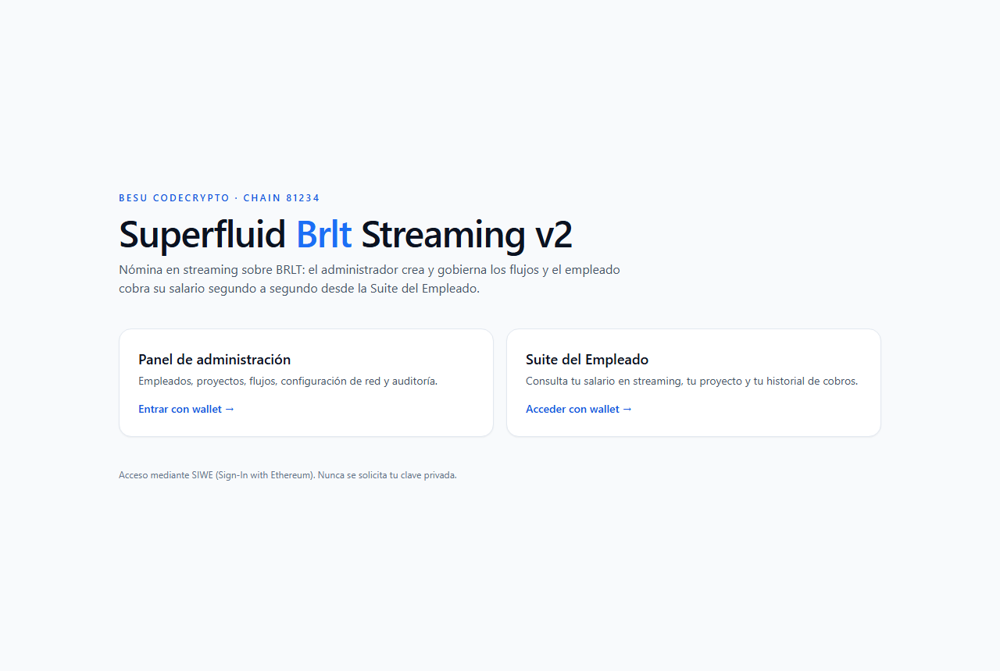
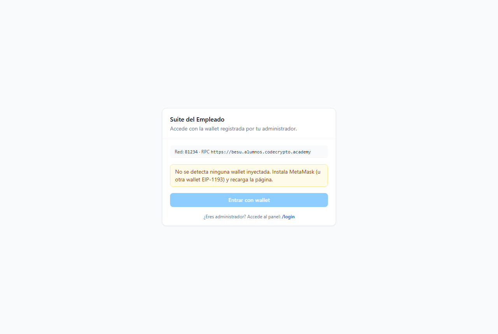
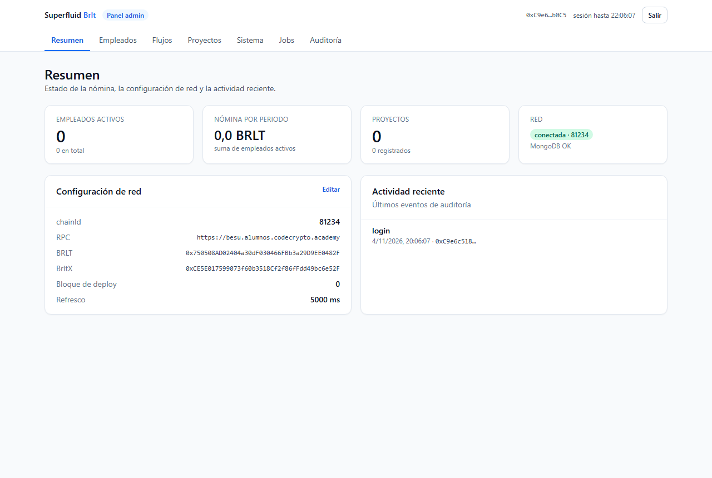
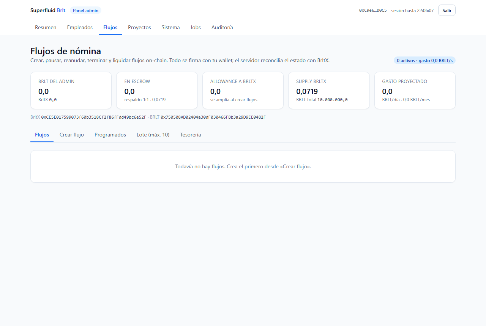
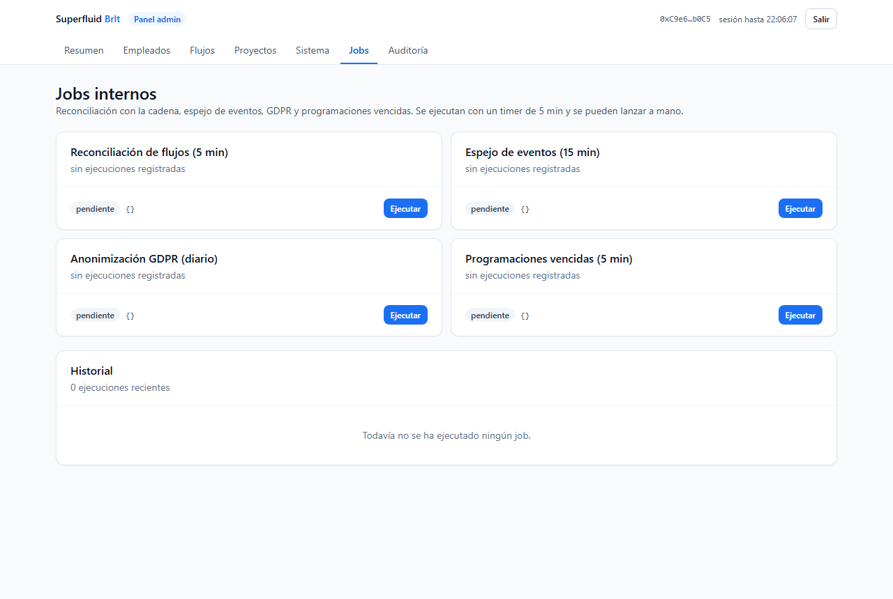
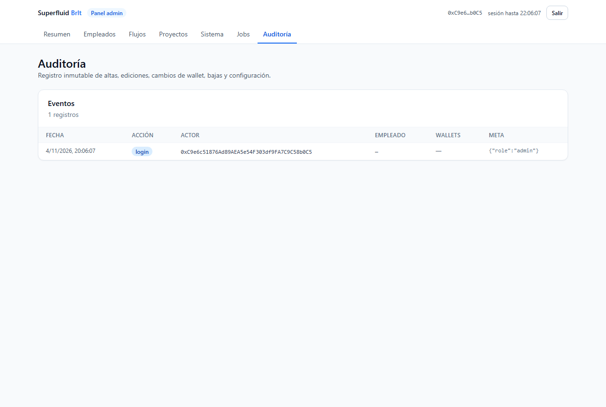

Empezar en 5 minutos
Empleado: entra en /suite/login, conecta MetaMask y verás tus saldos.
Admin: entra en /login con la wallet autorizada.

Empleado: cobriminatorio
En tu Suite verás Cobrable ahora (devengo incluido) y BRLT en cartera. Escribe el importe o pulsa «Todo» y después «Cobrar»: tu wallet recibe BRLT en la misma transacción.

| Estado del flujo | Qué significa | Tu acción |
|---|---|---|
| activo | el grifo corre | cobra cuando quieras |
| pausado | devengo congelado (el tiempo se aplaza) | espera |
| vencido | el plazo terminó | «Liquidar» |
| terminado | todo cerrado | cobra lo restante |
Admin: crear flujos
1) Sistema guarda RPC y contratos · 2) Proyectos y Empleados · 3) Flujos → Crear flujo con dos firmas (aprobación y creación).


Estados de un flujo
activo → pausado → activo → vencido → terminado. Al vencer, el flujo queda pendiente de liquidación (puede liquidarlo cualquiera y el remanente vuelve al admin — máx. 100 % del depositado va al empleado en su tramo devengado).
Pausa / reanudación
Al pausar, el tramo devengado se liquida y el tiempo restante se aplaza: el empleado no pierde devengo. Con la pausa activa, el cobro sigue disponible (el contrato lo permite incluso pausado).
Cambio de wallet
El empleado firma con la wallet nueva y el admin confirma. Los flujos activos se migran con `changeReceiver`: el flujo viejo se cierra y se abre uno nuevo con el saldo restante. Sin pagos duplicados.

Tus datos (GDPR)
En tu Suite: perfil, consentimiento (con fecha) y borrar mis datos con efecto inmediato. A los 30 días se anonimiza el nombre; tu wallet queda pseudonimizada hasta 90 días para el retiro.
Mantenimiento automático
La app se autoreconcilia cada 5 min: corrige desajustes leyendo el contrato,
guarda el diario de eventos y avisa de nóminas vencidas. Puedes ejecutar
manualmente cualquiera desde /admin/jobs.

Descargar PDF
Manuales imprimibles generados desde la documentación viva del proyecto:
Manual del Administrador (PDF) Manual del Empleado (PDF) Manual Técnico (PDF)